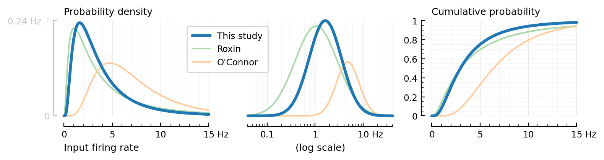

2022-01-08 • 1000-to-1
Contents
2022-01-08 • 1000-to-1¶
include("nb_init.jl");
using Revise
using Distributions
using DataFrames
using PartialFunctions: $
using PyFormattedStrings, LaTeXStrings, FilePaths, Colors
using Unitful: mV, Hz, ms, s as second, minute
using PyPlot: PyPlot as plt, matplotlib as mpl
using VoltageToMap
save = savefig $ (; subdir="methods");
Firing rates¶
We want Poisson firing, i.e. ISIs with an exponential distribution.
Firing rates lognormally distributed (instead of all the same, as before).
"""
`μ` and `σ` are mean and standard deviation of the underlying Gaussian.
`μₓ` is the mean of the log of the Gaussian.
"""
function LogNormal_with_mean(μₓ, σ)
μ = log(μₓ) - σ^2 / 2
LogNormal(μ, σ)
end;
# Mean and variance from Roxin2011 (cross checked with its refs Hromádka, O'Connor).
input_spike_rate = LogNormal_with_mean(4, √0.6) # (Hz, dimensionless)
LogNormal{Float64}(μ=1.0862943611198905, σ=0.7745966692414834)
roxin = LogNormal_with_mean(5, √1.04)
LogNormal{Float64}(μ=1.0894379124341003, σ=1.019803902718557)
gauss_variance = σ² = (σ_X, μ_X) -> log(1 + σ_X^2 / μ_X^2)
gauss_variance(7.4, 12.6) # for oconnor
0.296337
oconnor = LogNormal_with_mean(7.4, √0.3)
LogNormal{Float64}(μ=1.8514800002101244, σ=0.5477225575051661)
Distributions.pdf(d, x::Quantity) = pdf(d, ustrip(x)) / unit(x)
Distributions.cdf(d, x::Quantity) = cdf(d, ustrip(x))
fig, (ax1, ax2, ax3) = plt.subplots(ncols=3, figsize=(8, 2.2))
rlin = (0:0.01:15)Hz
rlog = exp10.(-2:0.01:2)Hz
function plot_firing_rate_distr(distr; kw...)
plot(rlin, pdf.(distr, rlin), ax1; clip_on=false, kw...)
plot(rlog, pdf.(distr, rlog), ax2; clip_on=false, xscale="log", kw...)
plot(rlin, cdf.(distr, rlin), ax3; clip_on=false, ylim=(0,1), kw...)
end
plot_firing_rate_distr(roxin, label="Roxin", c=lighten(C2, 0.4))
plot_firing_rate_distr(oconnor, label="O'Connor", c=lighten(C1, 0.4))
plot_firing_rate_distr(input_spike_rate, label="This study", c=C0, lw=2.7)
set(ax1; xlabel="Input firing rate", hylabel="Probability density", ytickstyle=:range)
set(ax2; xlabel=("(log scale)", :loc=>"center", :c=>lightgrey), ytickstyle=:range)
set(ax3; hylabel="Cumulative probability", legend=(:loc=>"lower left", :bbox_to_anchor=>(0.5, 0.02)))
deemph.(:yaxis, [ax1, ax2])
plt.tight_layout(w_pad=-2.4)
save("log-normal.pdf")

distrs = [oconnor, roxin, input_spike_rate]
DataFrame(
σ=getfield.(distrs, :σ),
mean=mean.(distrs),
median=median.(distrs),
std=std.(distrs),
var=var.(distrs),
)
3 rows × 5 columns
| σ | mean | median | std | var | |
|---|---|---|---|---|---|
| Float64 | Float64 | Float64 | Float64 | Float64 | |
| 1 | 0.547723 | 7.4 | 6.36924 | 4.37702 | 19.1583 |
| 2 | 1.0198 | 5.0 | 2.9726 | 6.76243 | 45.7304 |
| 3 | 0.774597 | 4.0 | 2.96327 | 3.62683 | 13.1539 |
.¶
Nunconn = 100
Nexc = 5200
Ninh = Nexc ÷ 4
1300
Ninh + Nexc
6500
using DataStructures: PriorityQueue
using Unitful: Time
λ = rand(input_spike_rate, Nexc) # Hz
exps = Exponential.(λ) # Hz
first_spiketimes = rand.(exps) * second
pq = PriorityQueue{Int, Time}()
for (i, t) in enumerate(first_spiketimes)
enqueue!(pq, i => t)
end
sim_duration = 10*second;
selected_spiker = argmin(first_spiketimes)
t = 0.0*second
ts = Vector{typeof(t)}()
while t < sim_duration
i, t = dequeue_pair!(pq) # earliest spike
new_ISI = rand(exps[i]) * second
enqueue!(pq, i => t + new_ISI)
if i == selected_spiker
push!(ts, t)
end
end
MethodError: no method matching Exponential(::Float64)
Closest candidates are:
Exponential(::Quantity) at C:\Users\tfiers\OneDrive\PhD\voltage-to-wiring-sim\src\unitfuldistributions.jl:22
Stacktrace:
[1] _broadcast_getindex_evalf
@ .\broadcast.jl:670 [inlined]
[2] _broadcast_getindex
@ .\broadcast.jl:643 [inlined]
[3] getindex
@ .\broadcast.jl:597 [inlined]
[4] copy
@ .\broadcast.jl:899 [inlined]
[5] materialize(bc::Base.Broadcast.Broadcasted{Base.Broadcast.DefaultArrayStyle{1}, Nothing, Type{Exponential}, Tuple{Vector{Float64}}})
@ Base.Broadcast .\broadcast.jl:860
[6] top-level scope
@ In[55]:2
[7] eval
@ .\boot.jl:373 [inlined]
[8] include_string(mapexpr::typeof(REPL.softscope), mod::Module, code::String, filename::String)
@ Base .\loading.jl:1196
using OrdinaryDiffEq
using ComponentArrays
using Parameters
using Unitful: nS, pF, pA
@with_kw struct IzhikevichParams
C = 100 * pF
k = 0.7 * (nS/mV)
b = -2 * nS
v_r = -60 * mV
v_t = -40 * mV
v_peak = 35 * mV
c = -50 * mV
a = 0.03 / ms
d = 100 * pA
end
cortical_RS = IzhikevichParams();
τ_syn = 7 * ms;
function f(D, vars, params, t)
@unpack C, k, b, v_r, v_t, v_peak, c, a, d = params
@unpack v, u = vars
D.v = (k * (v - v_r) * (v - v_t) - u) / C
D.u = a * (b * (v - v_r) - u)
D.g = -g / τ_syn
return nothing
end
x0 = ComponentArray(v = -80.0mV, u = 0.0pA)
prob = ODEProblem(f, x0, float(sim_duration), cortical_RS)
Δt = 0.1ms
integrator = init(prob, Tsit5(); Δt, adaptive=true)
t: 0.0 s
u: ComponentVector{Quantity{Float64}}(v = -80.0 mV, u = 0.0 pA)
t = 0ms:0.1ms:sim_duration
v = t -> sol(t).v / mV |> NoUnits
plot(t, v.(t));